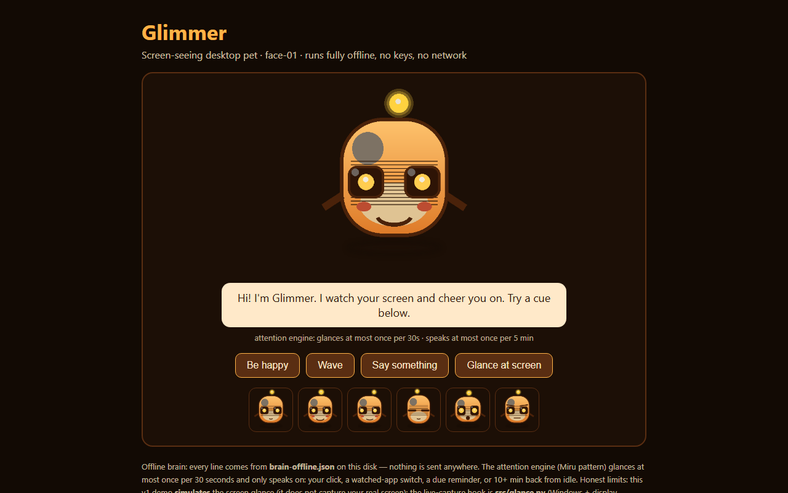

    <div class="halo"></div>
    <div class="dots"></div>
    <div class="frame">
      <div class="bar"><i></i><i></i><i></i><span class="name">glimmer-pet.app</span></div>
      <div class="vp"></div>
    </div>
    <div class="stats">
      <div class="stat s1" data-n="10"><b>10</b>faces</div>
      <div class="stat s2" data-n="22"><b>22</b>files</div>
      <div class="stat s3" data-n="5"><b>5</b>min setup</div>
    </div>
